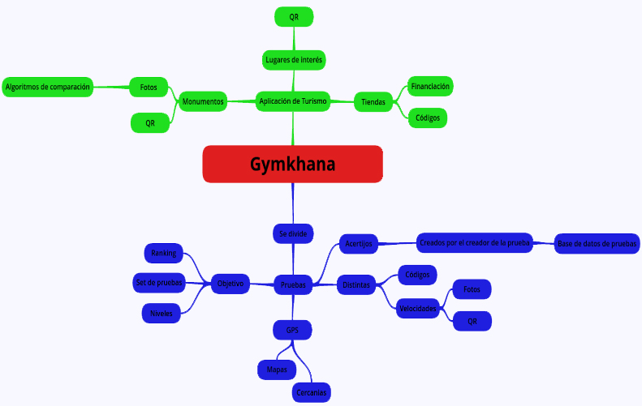
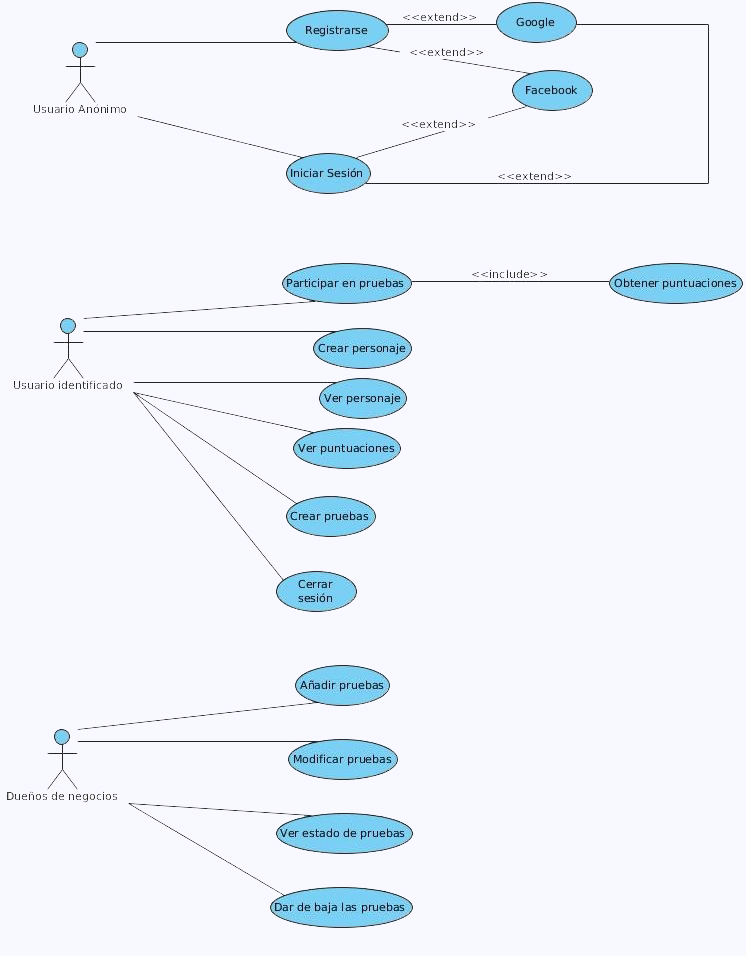

Como surgió la idea
Surgió a partir del siguiente mapa mental:

¿Qué usuarios van a usar nuestro sistema?
Nuestra app va a ser usada principalmente por:
-
Moderadores: Realizan la tarea de crear, modificar, borrar contenidos en la App. También gestionan las validaciones de pruebas por partes de los usuarios y gestión con organismos públicos y negocios para incluir contenido en la App.
-
Representantes de entidad pública: Desde un organismo público, se encarga de ponerse en contacto con los administradores de la App, indica que zonas le gustaría que se desarrollen pruebas y eventos.
-
Representante de negocio: Negocios locales de la ciudad, se ponen en contacto con los administradores de la App, y negocian la presencia de estos en la la App.
-
Jugadores: Gerente de un momentos que con las pruebas busca hacer la visita más entretenida e instructiva a la vez.
Capacidades que tendrá nuestra aplicación
Nuestra aplicación móvil tendrá como funcionalidades del sistema:

Plan de entregas
Lista inicial del producto(Product Backlog)
La lista del producto con las historias que se usarán en el inicio del desarrollo es la siguiente:
- Realizar prueba
- Añadir pruebas para los clientes
- Realizar pruebas estando registrado
- Registrar usuario
- Iniciar sesión
- Modificar usuario
- Cerrar sesión
- Pagar por una prueba
- Mandar mensaje a un moderador
- Enviar pruebas para añadir usuarios
-
Aceptar prueba de un usuario
-
Modificar prueba
-
Validar prueba que un cliente ha pagado
- Ver ranking
- Compartir prueba
- Crear personaje como un avatar, un nick
- Notificación de una prueba recibida
- Añadir prueba Premium
- Pruebas recibidas. Mensajes
- Añadir pruebas de los clientes
- Modificar pruebas de los clientes
- Iniciar sesión en la web para clientes y administradores
- Cerrar sesión en la web para clientes y administradores
- Pagar por una prueba para el cliente
- Mandar mensaje a un moderador
- Validar prueba que un cliente ha pagado
- Añadir prueba Premium de un cliente
- Editar mis pruebas del cliente
- Eliminar mis pruebas del cliente
- Mandar un mensaje del cliente a un administrador
- Editar cuenta del cliente
- Ver mensajes recibidos del administrador
- Contestar mensajes recibidos del administrador
- Marcar el administrador un mensaje como importante
- Editar cuenta el cliente
- Ver mensajes recibidos para el administrador
- Marcar un mensaje como importante para el administrador
- Ver pruebas recibidas del administrador
- Ver pruebas para el cliente
- Aceptar pruebas para el administrador
- Rechazar pruebas para el administrador
Descripción de las entregas
El plan de Entregas que realizamos se subdividió en dos subentregas; una que fue el 14 de Diciembre de 2016 en donde se tuvo un primer prototipo donde los usuarios podían probar nuestra app. Y como segunda entrega que se realizó el 11 de Enero de 2017 donde se terminó la app para los clientes y se realizó una página web para que un administrador pudiera controlar la aplicación de GymkiTour.